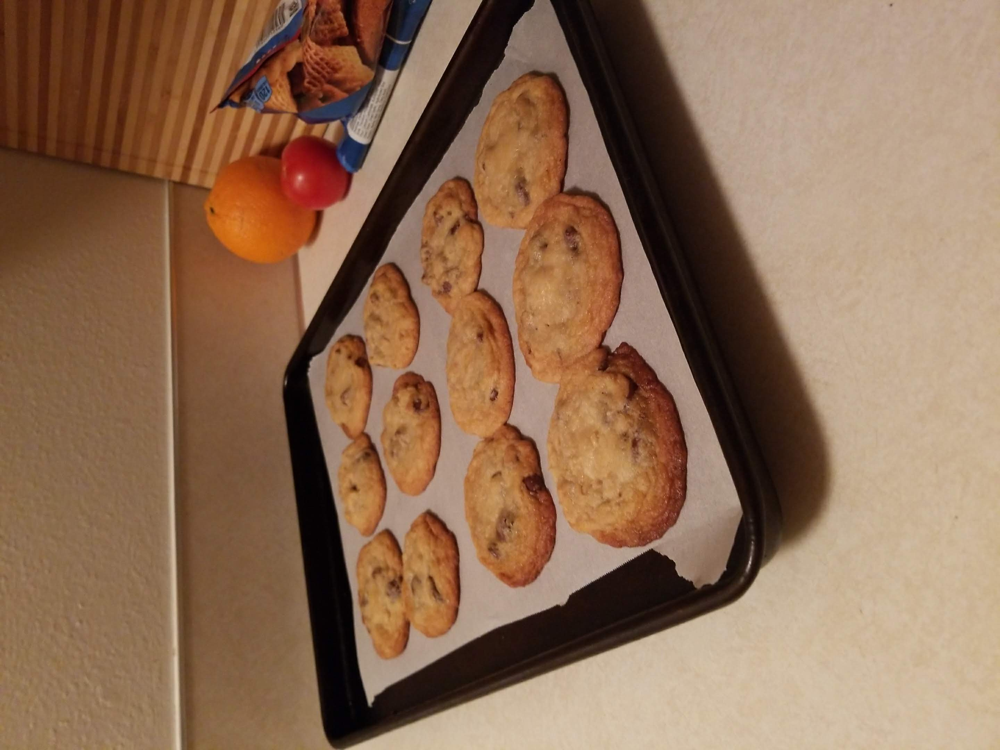

Michael's Chocolate Chip Cookies

Description
This recipe is my own chocolate chip cookie recipe that I've iterated on over the years.
It takes inspiration from AllRecipes, my friends, and my cooking idol, J. Kenji Lopez-Alt.
Crispy at the edges, soft in the middle, this cookie represents my platonic ideal of delicious.
Ingredients
- 3 Cups All-Purpose Flour (Dry)
- 1 Tsp Baking Powder (Dry)
- 1 Tsp Salt (Dry)
- 1 Cup Brown Sugar (Wet)
- 1 Cup White Sugar (Wet)
- 1 Cup Softened Butter (Wet)
- 2 Eggs (Wet)
- 2 Tsp Vanilla Extract (Wet)
- 1 Tsp Baking Soda dissolved in Warm Water (Wet)
- Chocolate Chips to Taste (I use one small bag or two cups)
Steps
- Preheat oven to 325 degrees fahreinheit.
- Mix together your dry ingredients in a small bowl, leave to the side
- For the wet ingreidents, use a larger bowl. Add both sugars together.
- Add the softened butter to the sugar, and mix until butter is combined and creamy.
- Add the eggs to the wet mixture one at a time, mixing well. Add the rest of the wet ingredients and combine.
- Add half of the dry mixture, combine. Add desired amount of chocolate chips. Combine.
- Add second half of the dry mixture. Mix until combined.
- (Optional but HIGHLY recommended) Leave mixture covered in fridge overnight. You could also make doughballs and refridgerate those for a shorter amount of time if wanting cookies sooner.
- Bake cookies on a heavy baking sheet lined with parchment paper for 12 minutes.
- Remove from oven and let rest on sheet for 5 minutes.
- Enjoy!
Home